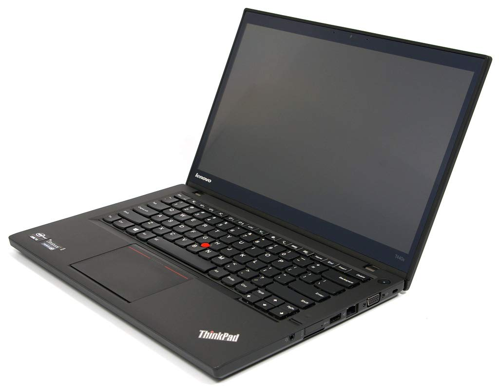

<body>
  <style>
    .vmi {
      display: block; /* A kép blokk szintű elem lesz */
      margin: 0 auto; /* Automatikus margó a középre helyezéshez */
      max-width: 100%; /* Opcionális: a kép mérete nem haladja meg a szülő elem szélességét */
    }
  </style>
  
  
</body>